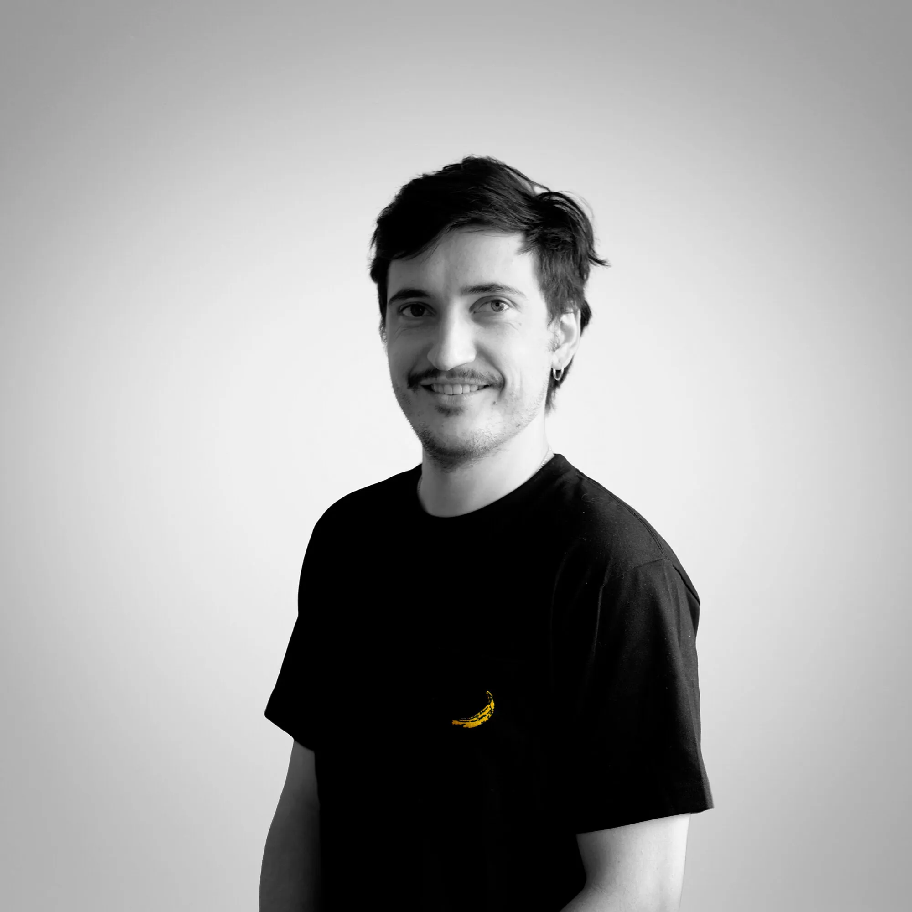

Pintor realista · Santiago de Chile
Maximiliano Langevin
Acércate.
Verde tierra contra piel cálida. Son complementarios: el fondo frío hace que la piel se vea más viva.
Paleta medida en la obra
El punto más claro del cuadro es el velo. Cada hilo, pintado a mano.
Detalle · Karin Goldberg, 2025
Obra reciente
Karin Goldberg
2025 · Óleo sobre lino · 48 × 68 cm
Óleo sobre tela y lino · 2020 — hoy
Pinturas
Toca una obra para ver sus vistas, su paleta y consultar por ella
Obra en proceso
Marcos 16:16
Óleo sobre tela, 77,5 × 102,5 cm. Todavía está en el caballete. Baja para recorrerla por dentro.
La luz de colores cae sobre el damero. Ella intenta tocarla.
El blanco y negro del piso es neutro: el color queda solo para la luz.
Detrás de la reja, el retablo: dorado, sombra y madera tallada.
«Qui crediderit et baptizatus fuerit salvus erit.»
Marcos 16:16 · El que crea y sea bautizado, se salvará.
Marcos 16:16
Lectura de color
Cada cuadro, su paleta.
Medimos los colores de cada pintura. Las barras muestran cuánto ocupa cada uno en la tela. Al lado, lo que hace ese color en el cuadro.
2024 · Óleo sobre lino · 40 × 60 cm
Exposición «Polímatas» · Estadio Italiano, 2024
El Conde
Un retrato en grisalla a partir de la película «El Conde». Se expuso en «Polímatas» y terminó frente a quienes hicieron la película.


Veteran George · 2024
Mira de cerca.

Dibujos · 2019
Del trazo a la forma.
Copia de un dibujo de William Bouguereau. Grafito sobre papel de algodón, 30 × 23 cm. Cinco fotos del mismo dibujo, desde las primeras líneas hasta la firma.


Xilografía · 2017
Tallar la luz.
La Mosca: tallada en madera e impresa a mano sobre papel Fabriano, 30 × 70 cm. En un grabado, todo lo blanco es madera que se quitó con la gubia.

Ilustración · 2018 — 2021
Una cabeza, seis peinados.
Autorretrato digital hecho en Photoshop, 2018. Después vinieron sapos, cómics y animaciones en After Effects.


Objetos · 2020 — 2022
Fuera del lienzo
Cerámica esmaltada, zapatillas pintadas a mano y otros objetos que salen del taller.

Santiago, Chile · 1996
Biografía
Maximiliano Langevin Larraín
Encargos
Un retrato tuyo, o de alguien que quieres.
Así funciona un encargo, de la primera conversación a la firma.
Contacto
Hablemos de un retrato.
Encargos, exposiciones o colaboraciones. Respondo personalmente.